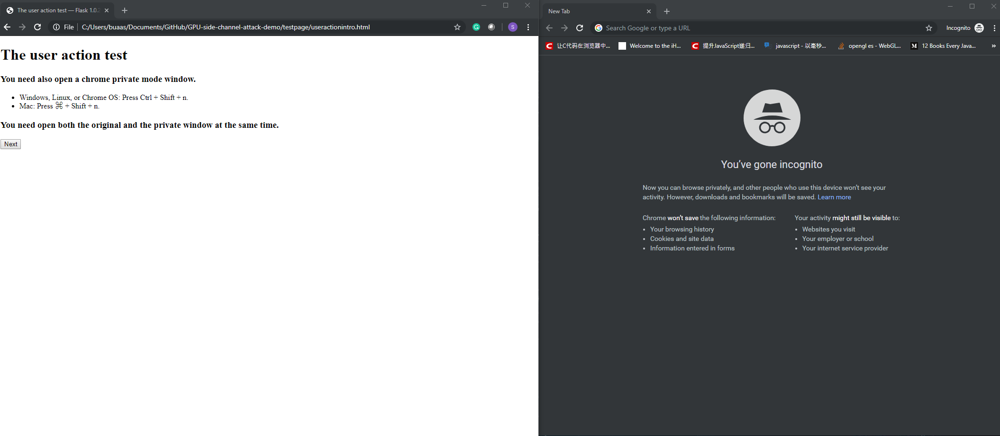

test environment
You need also open a chrome private mode window.
- Windows, Linux, or Chrome OS: Press Ctrl + Shift + n.
- Mac: Press ⌘ + Shift + n.
You need open both the original and the private window at the same time.
Also, you need make sure every window just open one tab during the test.
800 || this.height>1000) if (this.width/this.height>800/1000) this.width=800; else this.height=1000;'>